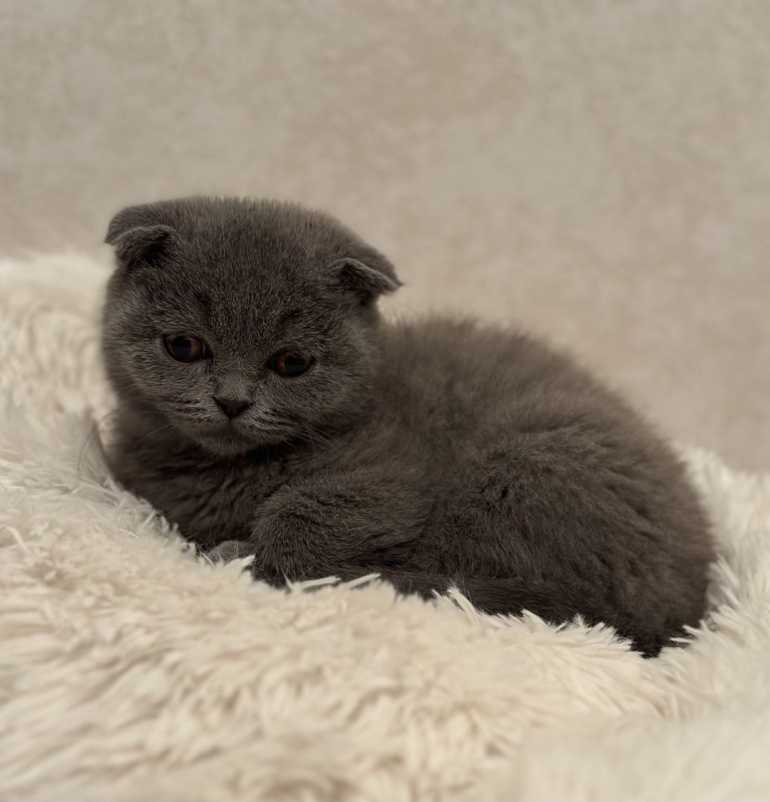
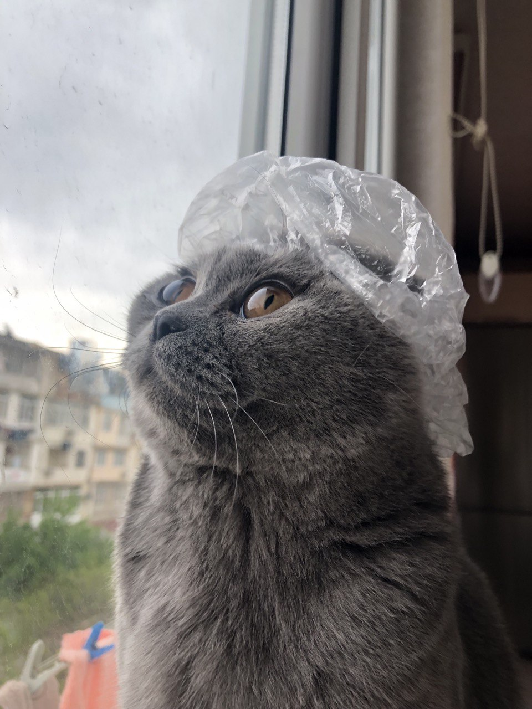
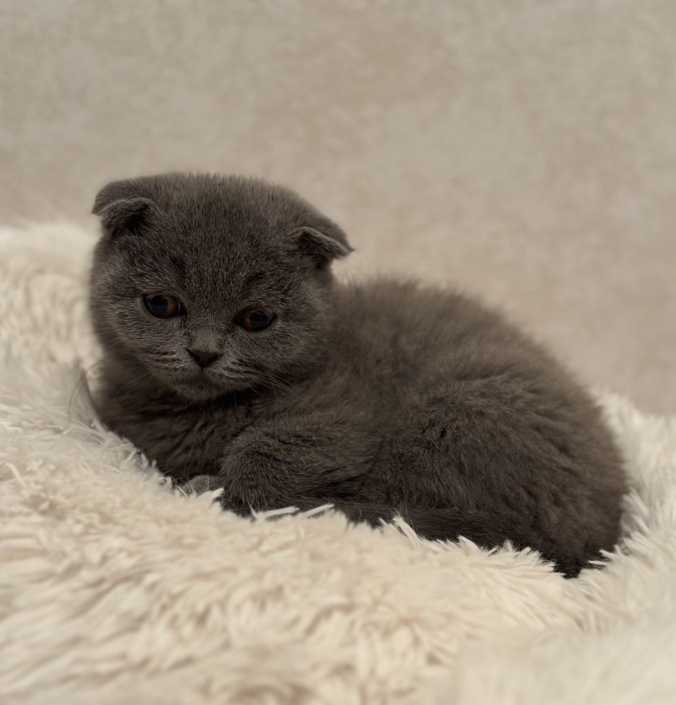
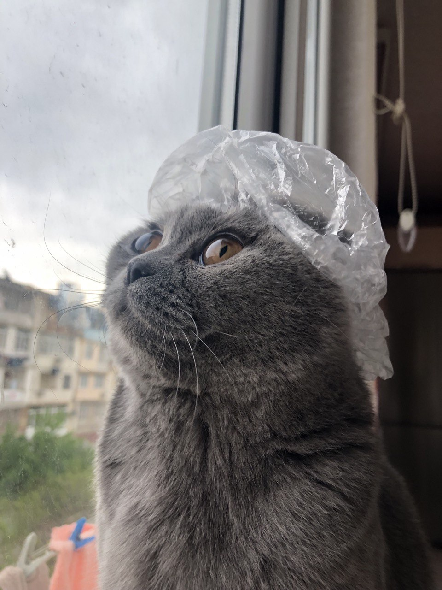
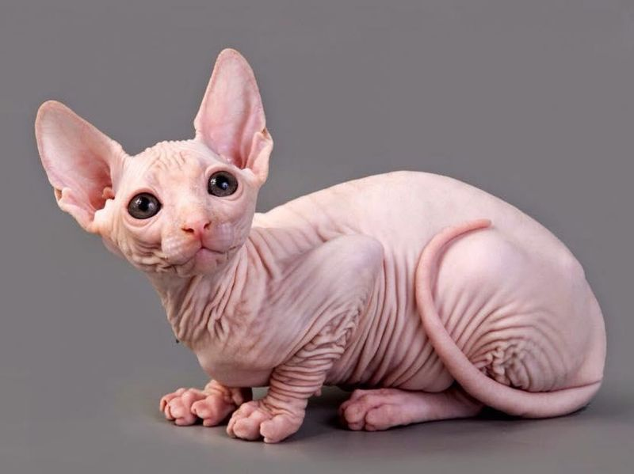

LUNA
Pişik Sortları

Haqqımızda.
Fəaliyyətimiz ilk dəfə 01.01.2023 cü ildə başlamışdır.
Pişik sahibi olmaq istəyənlərə məsləhətim odur ki,ilk öncə
Sahiblənəcəyiniz pişik haqqında məlumatlar toplayasınız, tək sizin yox valideyinlərinizində
düşüncələri önəmlidir. Bunları həll etdikdən sonra. Evdə həmin pişik üçün şərait qurasınız məsələn:
Qum qabı, qayçısı, darağı, oyuncağı,qalacağı yuva və s kimi şeylər.
Sizin üçün öz pişiyimin şəklini görsədəcəm əslinə qalsa səhifənin başlığında və sonun dakı
şəkillərdə LUNA ya aiddir (Scotish Fold cinsidir və dişidir).
 



və ən əsası seçəcəyiniz BAYTARDIR. Çünki baytar lazımı olan təlimatları sizə verəcək məsələn: iynə vaxtları, qurd dərmanı, təmizliyi və s kimi şeylər.
Scottish Fold

Öz yaranmasına görə bu pişiklər 1961 - ci ildə Şotlandiyanın Petşir qraflığında yerləşən fermada doğulmuş və gözlənilməz mutasiya aşkarlanmış pişik balalarına borcludurlar. Çoban Uilyam Ross ağ pişik balası Syuzini əldə edir. Müasir skotiş - foldlar məhz Syuzidən törəyiblər. Təəssüflər olsun ki, bu pişik erkən yaşda avtomobilin altında qalsa da o vaxta qədər o, daha bir qulağı sallaq pişik balasını - Snuksu dünyaya gətirməyə macal tapmışdı. Snuks bu cins pişiklərin artmasında böyük rol oynamışdır. İlk vaxtlar hesab edirdilər ki, bu pişiklər kardır. Lakin bu ehtimallar özünü doğrultmadı amma xüsusi quruluşuna görə onların qulaqlarına tez - tez təmizləmə lazımdır.
Sphynx
Sfinks — (ing. Sphynx), dünyada tanınan tüksüz üç pişik növündən biri. Ömürləri 8-14 il arası dəyişir. Davamlı olaraq çimizdirilməlidirlər. Tükləri olmadığından soyuğa qarşı dözümsüzdürlər.
Siberian

Sibir pişiyi Rusiyada bir əsrdir mövcud olan yerli pişik cinsidir (təbii və mədəni mühitə uyğunlaşaraq növün digər populyasiyalarından təcrid olunmuş şəkildə inkişaf etmişdir).[3] Bu yaxınlarda, 1980-ci illərin sonundan etibarən dünyada nəşr olunan standartlara uyğun olaraq rəsmi cins kimi yetişdirilir.
.webp)